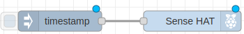
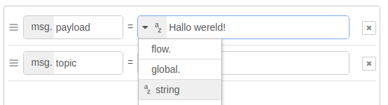

Blog
2024
12-04-2024 - Wifi probleem
Ik wilde voor de CoderDojo morgen de wifi gegevens aanpassen met: sudo raspi-config maar kreeg helaas een foutmelding. In de bijlage vind je hoe je het probleem zou kunnen oplossen.
Ook in de bijlage aangegeven hoe je het wachtwoord kunt veranderen, zie link
09-04-2024 - Kopieren van code voorbeelden.
Nu, als je kijkt naar de lessen, zie je soms een symbool dat lijkt op "Copy" rechtsboven bij de codevoorbeelden. Als je daarop klikt, wordt de tekst automatisch gekopieerd naar het klembord van de computer, zodat je het gemakkelijk kunt plakken waar je maar wilt. Hier is een voorbeeld:
Deze tekst kun je ook kopieren naar het klembord door op het "Copy" symbool te klikken.
Het "Copy" symbool zie je in de rechterbovenhoek van deze tekst.
Als je de code hebt gekopieerd, zie je een groen vinkje verschijnen.
Dat betekent dat het gelukt is!27-03-2024 - Naam i.p.v. IP-adres gebruiken.
Als je met je Raspberry Pi werkt, kun je hem een speciale naam geven. Tijdens de installatie hebben we de naam "raspi-1" gebruikt. Dus in plaats van altijd dat lange IP-adres te moeten onthouden, kun je gewoon de naam gebruiken die je aan je Raspberry Pi hebt gegeven. Bijvoorbeeld:
ssh pi@raspi-1 # ipv pi@192.168.2.15Dat is super handig!
13-03-2024 - Module voor de Sense-HAT.
Er is ook een Node-RED module voor de Sense-HAT. Zie o.a.:
Installleer de modue door te zoeken op node-red-node-pi-sense-hat in het menu onder: Manage Pallette. $\\$
De nodes worden geinstalleerd onder de kop: Raspberry Pi.
Voorbeeld om tekst over het display te laten scrollen:
- Sleep een Inject- en het Scroll message-node naar het canvas en verbind de twee nodes. $\\$
- Dubbelklik op timestamp node. Verander de waarde van het veld
msg.payloadinStringen typ in het veld zelf de tekst: Hallo wereld! $\\$ - Klik op de toets: Deploy.
- Laat de tekst over het scherm rollen door op de Inject node te klikken.
08-03-2024 - Klaar.
De cursus is klaar.
2023
28-12-2023 - Cursus opzet gemaakt.
Vandaag de basisstructuur voor de SENSEHATKIDS cursus opgezet.